![]()
#include <Rcpp.h>
using namespace Rcpp;
// wrap position to grid
int wrap(int pos, int size) {
if(pos < 0) pos = pos + size;
if(pos >= size) pos = pos - size;
return pos;
}
// automaton run function
// [[Rcpp::export]]
NumericMatrix automaton(int n_rows, int n_cols, int iterations, int max_span) {
int source_row = 0;
int source_col = 0;
int span_row = 0;
int span_col = 0;
int row = 0;
int col = 0;
int r = 0;
int c = 0;
double source_val = 0;
NumericMatrix grid(n_rows, n_cols);
for (int row = 0; row < n_rows; row++) {
for (int col = 0; col < n_cols; col++) {
grid(row, col) = R::runif(0, 1);
}
}
for (int it = 0; it < iterations; it++) {
source_row = floor(R::runif(0, n_rows));
source_col = floor(R::runif(0, n_cols));
source_val = grid(source_row, source_col);
span_row = floor(R::runif(0, max_span));
span_col = floor(R::runif(0, max_span));
row = source_row - span_row;
col = source_col - span_col;
do {
c = wrap(col, n_cols);
do {
r = wrap(row, n_rows);
grid(r, c) = (grid(r, c) + source_val) / 2;
row++;
} while (row < source_row + span_row);
col++;
} while (col < source_col + span_col);
}
return grid;
}Over the last few weeks I’ve been posting generative art pieces on mastodon1 from a generative art system I’ve called splatter. It creates pieces like these:


The splatter series has a lot in common with other generative art systems I’ve built in the past, and in many respects is a spiritual descendant of both curled and water colours.2 However, the system has developed enough of its own “look and feel” by now that I think of splatter as its own thing, deserving a writeup of its very own.
The basic idea
The core logic of splatter is pretty simple three-step process:
Create a “base” image that provides the large-scale structure to the piece (left panel below). This image is defined by a data frame with
rowandcolvariables that specify a coordinate in a grid, and a continuousvalueused to define the colour.Using the “base” data as input, create a “flowing” version of the same image (middle panel below). We do this by placing a particle at every cell in the grid, defining a vector field over the grid that describes how each particle moves, and then tracing out the paths of all the particles over many iterations.
Taking the “flowing” data as input, apply a randomly generated palette and create a prettily-coloured version of the image (right panel below).
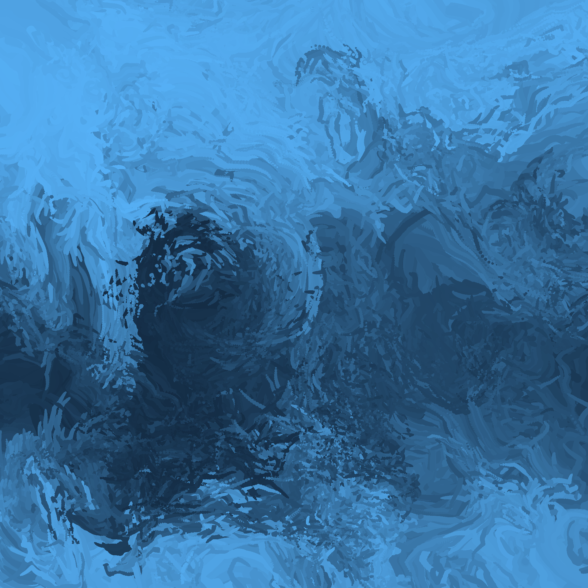
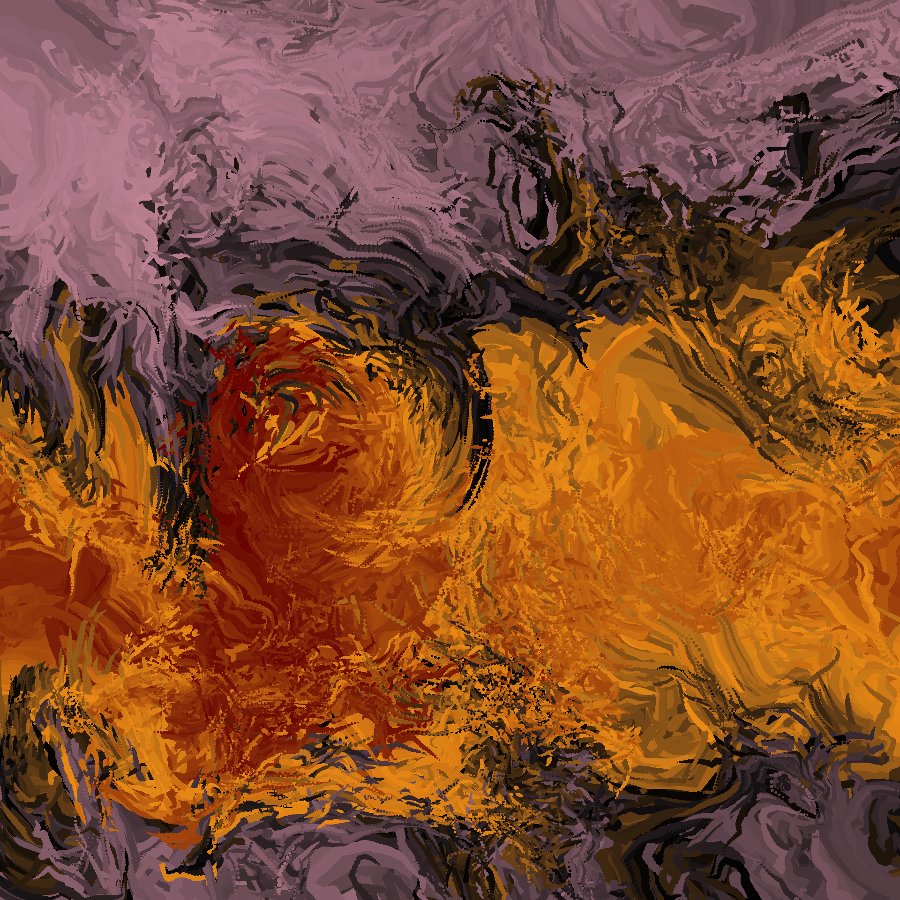
I’ll unpack these steps below.
Creating a base image
The base images (or at least the data from which those images are derived) used in the splatter system are generated by a simple cellular automaton implemented in C++ and called from R via Rcpp. This part of the system is very loosely based on the “stepping-stone automaton” that I discovered a few years ago when looking at Antonio Sánchez Chinchón’s watercolour art, and which I adapted to create my stoneskip system that produces pieces like these:


The implementation used in splatter is simpler than the stoneskip system. The C++ code below defines an automaton() function that is exposed to R via Rcpp, and can be used to create the base images:3 4
In the normal course of events this code would live in .cpp file and then I’d call Rcpp::sourceCpp() from R to trigger compilation and linking to R, but in the context of this blog post I don’t have to because I’m using the Rcpp language engine which automatically takes care of that within the R session that is used to render the post. So we can skip that and go straight to the R code that calls the automaton() function.
Here’s a create_base_image() function that constructs a data frame with columns specifying row and column indices, and using the automaton() function to assign a value to the corresponding cell:
create_base_image <- function(seed, rows, cols, iterations, span) {
set.seed(seed)
tidyr::expand_grid(
row = seq(0, cols, length.out = cols),
col = seq(0, cols, length.out = cols)
) |>
dplyr::mutate(
value = automaton(rows, cols, iterations, span) |>
as.vector() |>
ambient::normalise(to = c(.0001, 1))
)
}Here’s what it looks like when we call it:
base <- create_base_image(
seed = 789,
rows = 100,
cols = 100,
iterations = 400000,
span = 5
)
base# A tibble: 10,000 × 3
row col value
<dbl> <dbl> <dbl>
1 0 0 0.850
2 0 1.01 0.822
3 0 2.02 0.882
4 0 3.03 0.887
5 0 4.04 0.879
6 0 5.05 0.893
7 0 6.06 0.872
8 0 7.07 0.901
9 0 8.08 0.894
10 0 9.09 0.898
# ℹ 9,990 more rowsHere’s what it looks like if we render it as an image in ggplot2 using the standard blue colour palette:
base |>
ggplot2::ggplot(ggplot2::aes(
x = col,
y = row,
fill = value
)) +
ggplot2::geom_raster(show.legend = FALSE) +
ggplot2::coord_equal() +
ggplot2::theme_void() +
ggplot2::scale_x_continuous(expand = c(0, 0)) +
ggplot2::scale_y_continuous(expand = c(0, 0))It’s not super exciting or even particularly aesthetically pleasing, but that’s not the point. What I’m looking for in the base image is something that varies fairly smoothly to create an overall “shape” for the final image, and with enough random variations and irregularities to produce interesting textures at in the final image. I’m sure this could be done in a fancier way, but honestly this is good enough.
Creating the flow
Now the curl field:
curl_step <- function(data, iteration, scale, octaves, seed) {
noise_data <- ambient::curl_noise(
x = data$x_coord,
y = data$y_coord,
z = data$z_coord,
seed = seed,
generator = ambient::fracture,
noise = ambient::gen_simplex,
fractal = ambient::ridged,
octaves = octaves
)
data$iteration <- iteration
data$x_coord <- data$x_coord + noise_data$x * scale
data$y_coord <- data$y_coord + noise_data$y * scale
data$z_coord <- data$z_coord + noise_data$z * scale
data
}
curl_loop <- function(data, seed, iterations, scale, octaves) {
data$z_coord <- data$iteration <- 1
state <- purrr::accumulate(
.x = (1:iterations) + 1,
.f = curl_step,
.init = data,
scale = scale,
octaves = octaves,
seed = seed
)
dplyr::bind_rows(state)
}
create_curl_image <- function(data, seed, iterations, scale, octaves) {
data |>
dplyr::mutate(x_coord = col * .01, y_coord = row * .01) |>
curl_loop(
seed = seed,
iterations = iterations,
scale = scale,
octaves = octaves
) |>
dplyr::mutate(strength = 1 - (iteration / iterations))
}flow <- create_curl_image(
data = base,
seed = 100,
iterations = 99,
scale = .0002,
octaves = 5
)
flow# A tibble: 1,000,000 × 8
row col value x_coord y_coord iteration z_coord strength
<dbl> <dbl> <dbl> <dbl> <dbl> <dbl> <dbl> <dbl>
1 0 0 0.850 0 0 1 1 0.990
2 0 1.01 0.822 0.0101 0 1 1 0.990
3 0 2.02 0.882 0.0202 0 1 1 0.990
4 0 3.03 0.887 0.0303 0 1 1 0.990
5 0 4.04 0.879 0.0404 0 1 1 0.990
6 0 5.05 0.893 0.0505 0 1 1 0.990
7 0 6.06 0.872 0.0606 0 1 1 0.990
8 0 7.07 0.901 0.0707 0 1 1 0.990
9 0 8.08 0.894 0.0808 0 1 1 0.990
10 0 9.09 0.898 0.0909 0 1 1 0.990
# ℹ 999,990 more rowsSimplified version of the plot:
flow |>
ggplot2::ggplot(ggplot2::aes(
x = x_coord,
y = y_coord,
colour = value,
size = strength
)) +
ggplot2::geom_point(
stroke = 0,
show.legend = FALSE
) +
ggplot2::coord_equal(
xlim = c(.05, .95),
ylim = c(.05, .95)
) +
ggplot2::theme_void()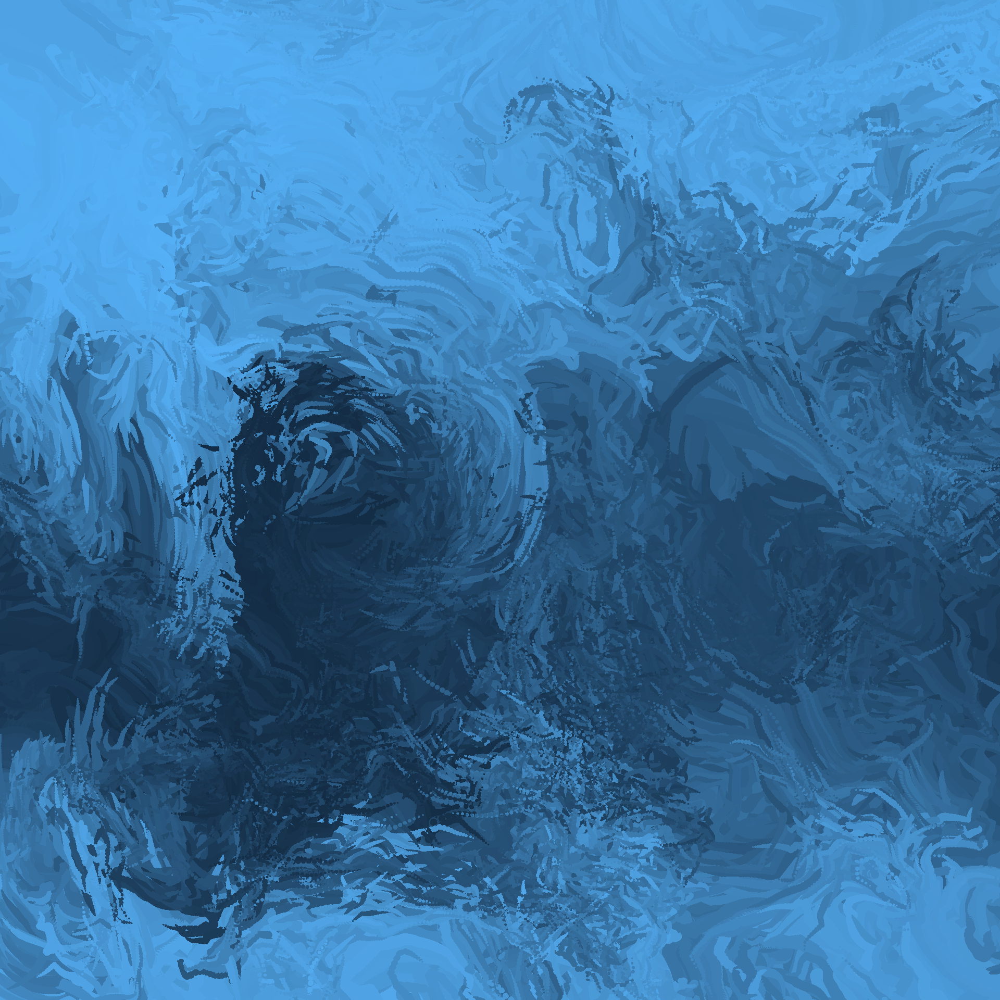
Choosing a palette
sample_palette <- function(seed, size) {
set.seed(seed)
cols <- c(
"#de9151", "#f34213", "#2e2e3a", "#bc5d2e", "#bbb8b2",
"#a63446", "#fbfef9", "#0c6291", "#000004", "#7e1946",
"#ffffff", "#ffcad4", "#b0d0d3", "#c08497", "#f7af9d",
"#aa8f66", "#ed9b40", "#ffeedb", "#61c9a8", "#ba3b46",
"#241023", "#6b0504", "#a3320b", "#d5e68d", "#47a025",
"#64113f", "#de4d86", "#f29ca3", "#f7cacd", "#84e6f8",
"#660000", "#990033", "#5f021f", "#8c001a", "#ff9000",
"#c9cba3", "#ffe1a8", "#e26d5c", "#723d46", "#472d30",
"#0e7c7b", "#17bebb", "#d4f4dd", "#d62246", "#4b1d3f",
"#0a0908", "#49111c", "#f2f4f3", "#a9927d", "#5e503f",
"#020202", "#0d324d", "#7f5a83", "#a188a6", "#9da2ab",
"#c2c1c2", "#42213d", "#683257", "#bd4089", "#f51aa4",
"#820263", "#d90368", "#eadeda", "#2e294e", "#ffd400",
"#f4e409", "#eeba0b", "#c36f09", "#a63c06", "#710000",
"#d9d0de", "#bc8da0", "#a04668", "#ab4967", "#0c1713",
"#012622", "#003b36", "#ece5f0", "#e98a15", "#59114d",
"#3c1518", "#69140e", "#a44200", "#d58936", "#fffb46",
"#6e0d25", "#ffffb3", "#dcab6b", "#774e24", "#6a381f",
"#bcabae", "#0f0f0f", "#2d2e2e", "#716969", "#fbfbfb",
"#2b4162", "#385f71", "#f5f0f6", "#d7b377", "#8f754f"
)
sample(cols, size = size)
}create_shaded_plot <- function(data, seed) {
palette <- sample_palette(seed = seed, size = 4)
data |>
ggplot2::ggplot(ggplot2::aes(
x = x_coord,
y = y_coord,
colour = value,
size = strength
)) +
ggplot2::geom_point(
stroke = 0,
show.legend = FALSE
) +
ggplot2::coord_equal(
xlim = c(.05, .95),
ylim = c(.05, .95)
) +
ggplot2::scale_size(range = c(0, 6)) +
ggplot2::scale_colour_gradientn(colours = palette) +
ggplot2::theme_void()
}
create_shaded_plot(flow, seed = 123)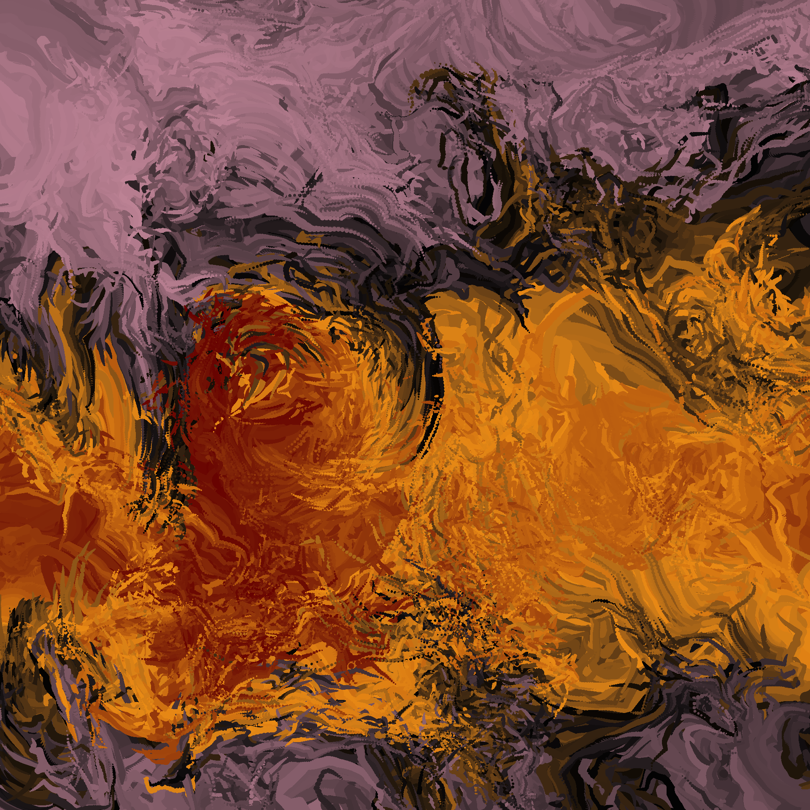
The finished system
Putting it all together:
splatter <- function(seed) {
stopifnot(length(seed) %in% c(1, 3))
if(length(seed) == 1) seed <- rep(seed, 3)
create_base_image(
seed = seed[1],
rows = 100,
cols = 100,
iterations = 400000,
span = 5
) |>
create_curl_image(
seed = seed[2],
iterations = 99,
scale = .0002,
octaves = 5
) |>
create_shaded_plot(seed = seed[3])
}Recreate the same image with a different random palette:
splatter(seed = c(101, 102, 123))
splatter(seed = c(101, 102, 333))
splatter(seed = c(101, 102, 666))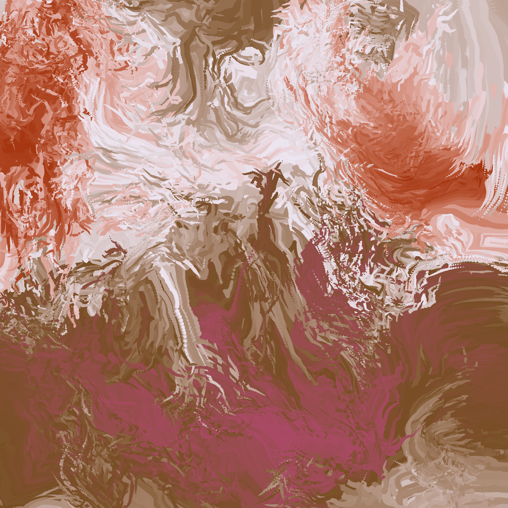
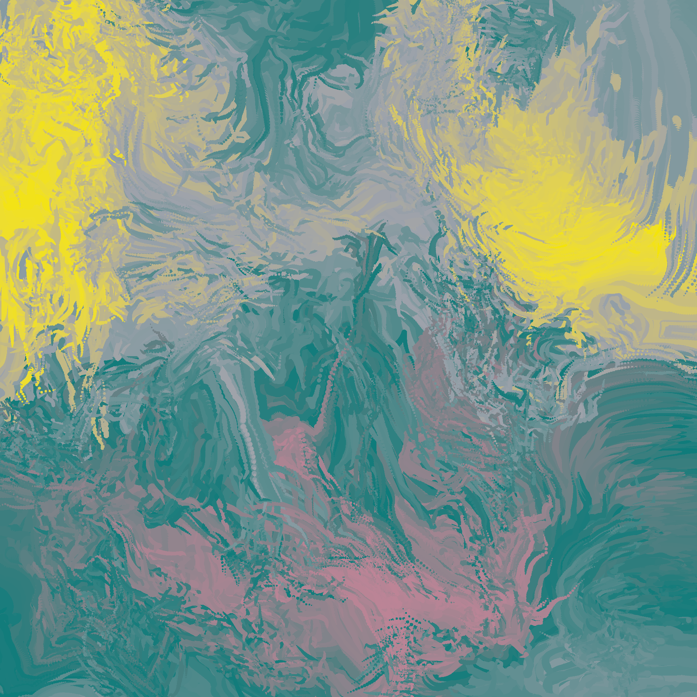
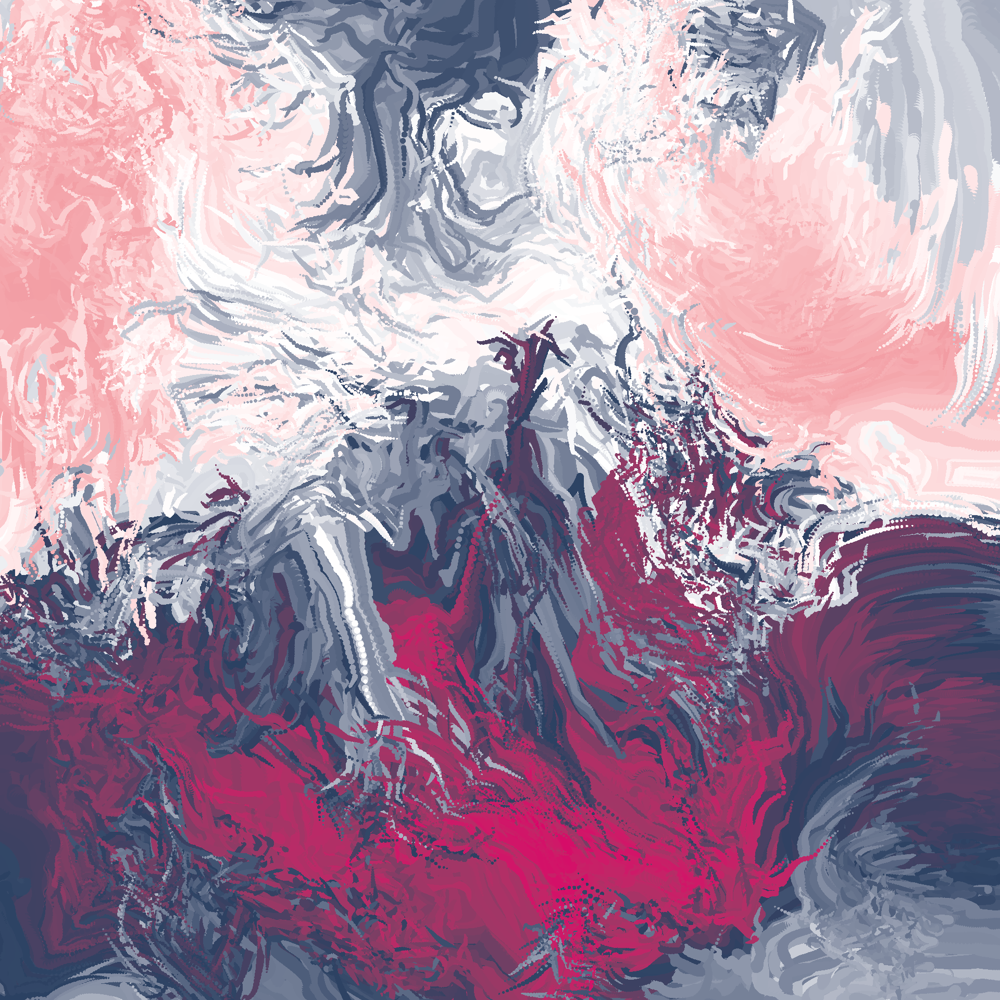
Keep the same base image and palette, but vary the flow field:
splatter(seed = c(101, 123, 666))
splatter(seed = c(101, 456, 666))
splatter(seed = c(101, 789, 666))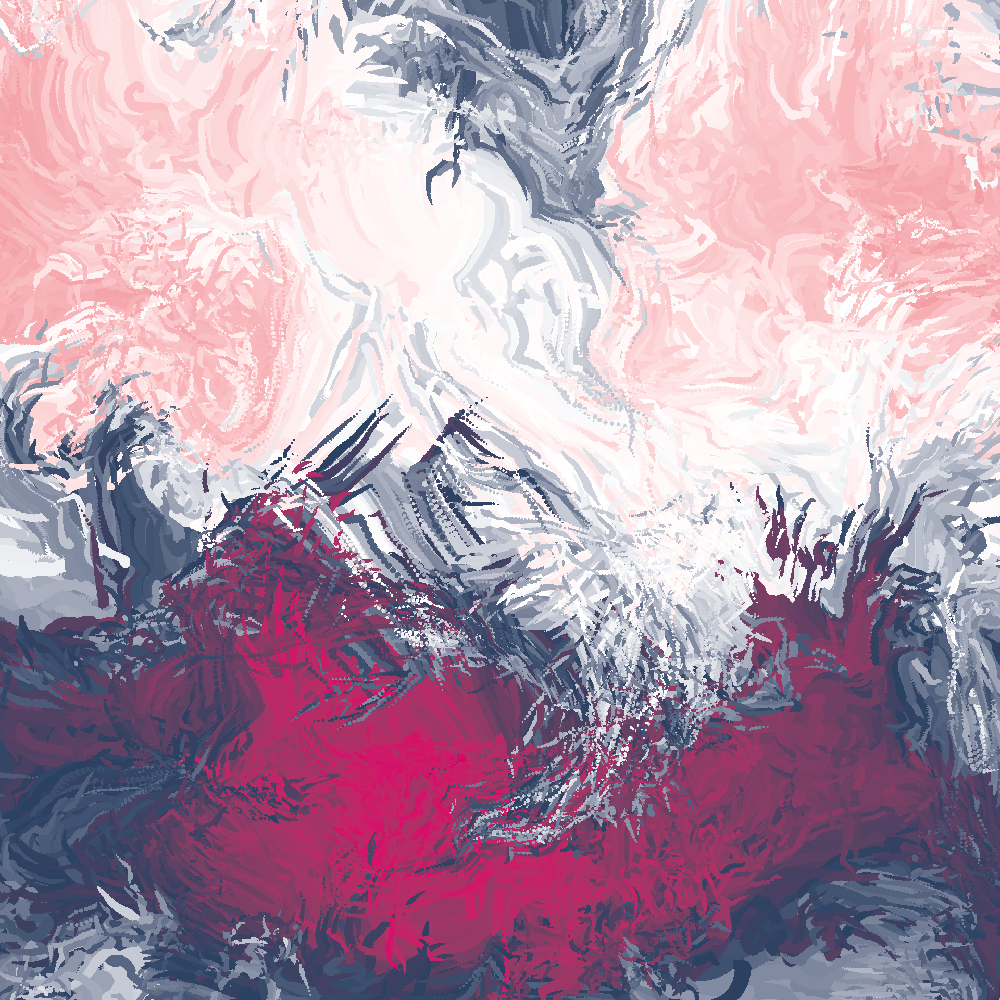
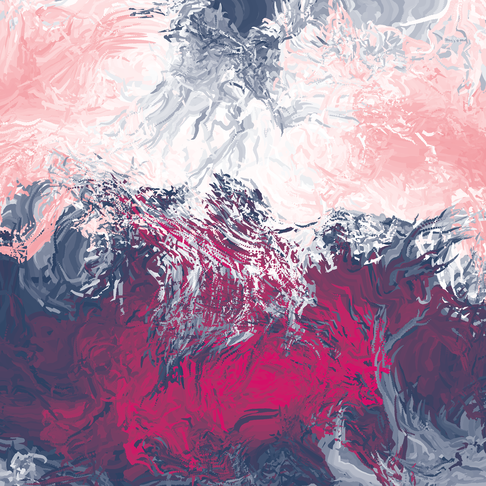
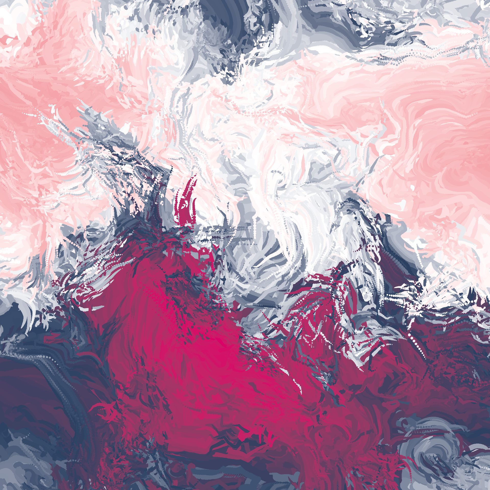
Vary the base image but keep the flow field and palette the same:
splatter(seed = c(789, 100, 123))
splatter(seed = c(456, 100, 123))
splatter(seed = c(123, 100, 123))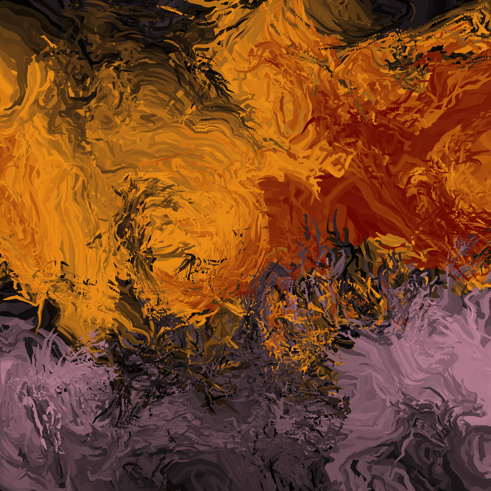
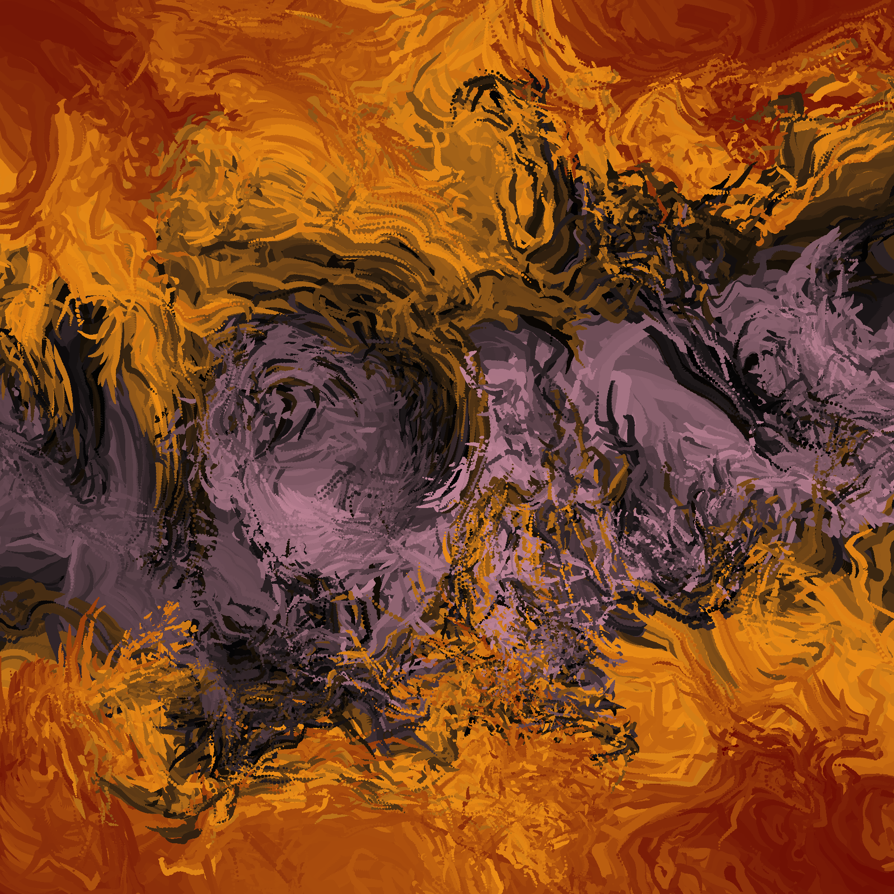
Footnotes
Technically I’ve also posted on bluesky, but to be perfectly honest I am not sold on bluesky and doubt I’m going to stick around. Yes I have an account, because there are people on there who I like who aren’t on mastodon, but every time I start scrolling I find myself feeling utterly miserable and wondering if I have made a bad decision. It feels like the whole site is fuelled by outrage-bait and shitposts, and it’s bad for my mental health. So far all I’ve done is post a few art pieces, and not feeling very enthusiastic about even that much participation. Sorry. It’s too much like thunderdome for me.↩︎
See this post for an old write up of the water colours system.↩︎
In complete honesty this code is slightly different to the version I implemented in the original splatter code. In the original version I was a little sloppy about managing the random seed, and in several places I was using the C++ native
rand()function for some of the random number generation. That’s problematic in the generative art context because I want to exercise control over the RNG seed from R using the usualset.seed()function, so I need my C++ code to consistently call the random number generators in R usingR::runif()↩︎At some level I’m mildly amused that I’m writing a C++ function that I can call from R, and said C++ function reaches back up to R to invoke a random number generator that is implemented in C.↩︎
Reuse
Citation
BibTeX citation:
@online{navarro2024,
author = {Navarro, Danielle},
title = {Splatter},
date = {2024-01-26},
url = {https://blog.djnavarro.net/posts/2024-01-26_splatter},
langid = {en}
}
For attribution, please cite this work as: